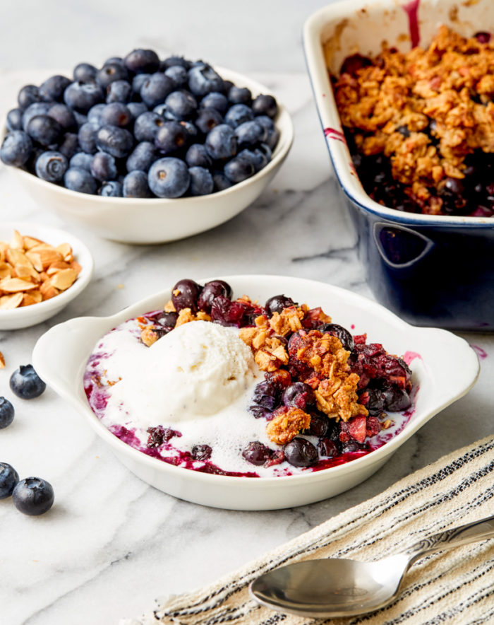

Blueberry Crisp Recipe
This blueberry crisp recipe is the perfect summertime dessert! An easy gluten-free and vegan recipe loaded with fresh blueberries, rolled oats, and almonds! You will find yourself turning to this all summer long.

Fruit crisps are one of my favorite types of dessert. I love apple crisp, mango crisp, rhubarb crisp, you name it! But if I had to pick a favorite, it’s blueberry crisp!
Blueberries just scream summer! They’re plump, sweet, fresh, juicy and so perfect baked into a blueberry crisp.
This easy dessert comes together in no time and is perfect for all of your summer bbq’s and cookouts.
Ingredients
- 5-6 cups blueberries
- 1/2 teaspoon lemon zest
- 2 tablespoons lemon juice
- 2 tablespoons tapioca flour
- 3/4 cup gluten-free rolled oats
- 3/4 cup almond flour
- 1/2 cup roasted almonds, chopped
- 1/3 cup maple syrup
- 1/4 cup coocnut oil
- 1 teaspoon cinnamon
- 1/2 teaspoon kosher salt
Instructions
- Pre-heat oven to 350 Fahrenheit.
- Place blueberries in a 9×9 baking dish. Add in lemon zest, lemon juice, and tapioca flour. Gently toss together.
- In a separate bowl combine; rolled oats, almond flour, chopped almonds, maple syrup, coconut oil, cinnamon, and salt. Mix together until everything is well incorporated.
- Distribute the crisp topping over the blueberries covering the surface of the pan.
- Bake for 50 minutes or until the top is golden brown and the blueberries are hot and bubbly.
- Serve with your favorite ice-cream and enjoy it!
Notes
- Tapioca flour is a natural thickener. If you don’t have any on hand, you can sub in cornstarch or arrowroot.
- You can prepare this crisp ahead of time and store it in the fridge for up to 24 hours. Once ready to bake, bring to room temperature before baking.
- This crisp is delicious when served warm with vanilla ice-cream. If you want to keep the recipe 100% vegan, be sure to buy dairy-free ice-cream.
Return Home